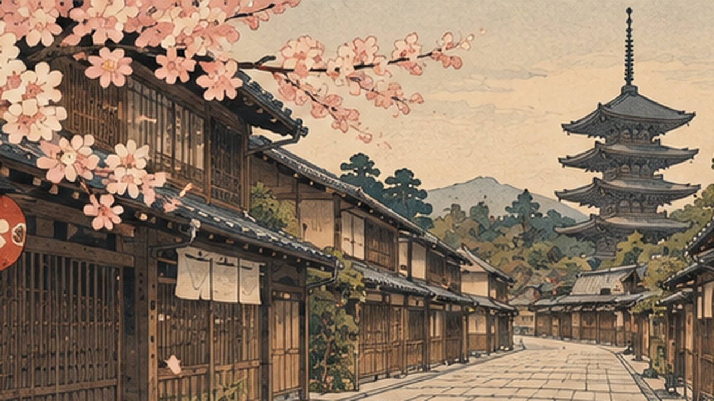
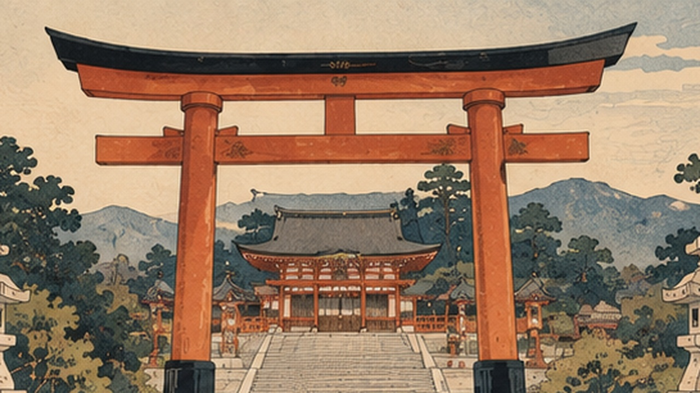
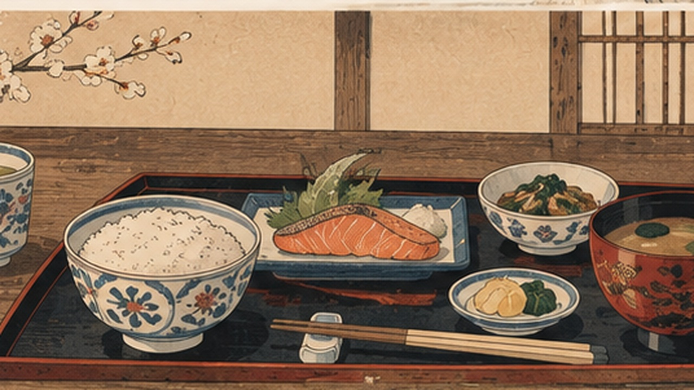
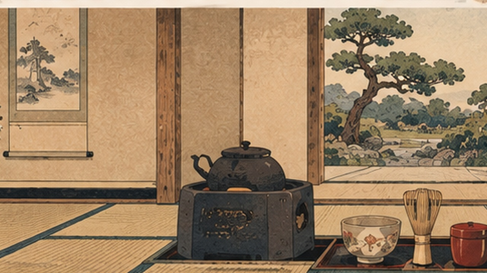
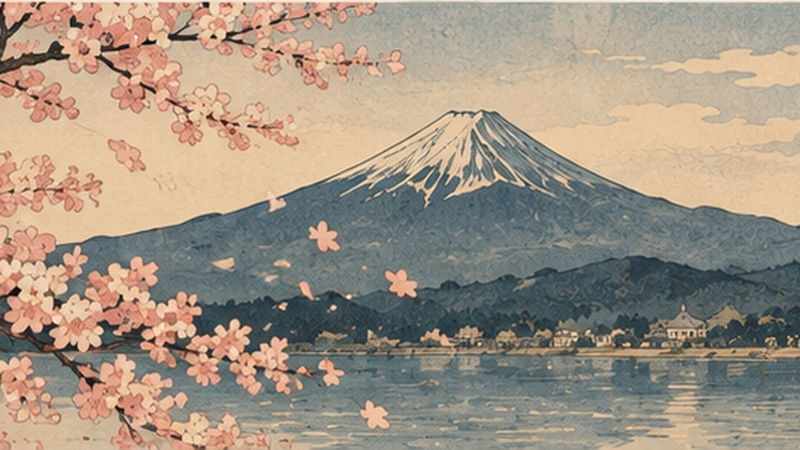
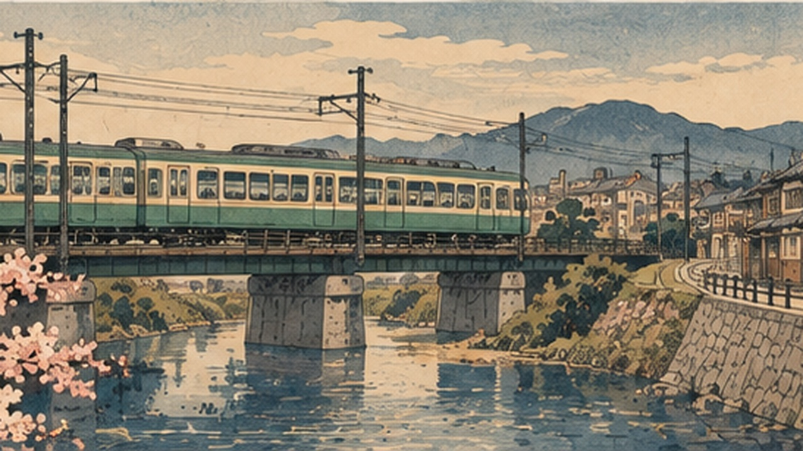

町家（まちや）
Machiya
京都传统城市住宅常见狭长结构，是理解古都生活方式的重要入口。
用简洁的文化背景帮助理解日语使用场景。这里不做复杂剧情，只保留实用、可复习的文化知识。

京都传统城市住宅常见狭长结构，是理解古都生活方式的重要入口。
京都花街保留传统表演、礼仪和待客文化。舞妓与艺妓是其中广为人知的职业形象。
石、砂、水、苔与植物共同构成空间节奏，季节变化也是庭园体验的一部分。

鸟居通常标示神社区域入口，象征从日常空间进入神圣空间。
不少神社会设手水舍，参拜者在进入主要参拜区域前清洁双手和口部。
神社或寺院常见的护身符，祈愿内容包括平安、健康、学业、交通安全等。

和食常强调季节感、食材本味和摆盘。米饭、汤、主菜与小菜是常见组合。
吃饭前常说「いただきます」，表达接受食物与感谢之意。
避免把筷子直插米饭，也避免用筷子对筷子直接传递食物。

鞠躬可以用于问候、感谢、道歉和表示敬意。
进入住宅、部分旅馆、寺院或传统餐厅时，经常需要在玄关脱鞋。
在电车等公共空间里通常会避免大声通话或制造明显噪音。

春季赏樱是日本极具代表性的季节活动，京都也是热门赏樱地。
夏季烟火大会常与夜市和浴衣等元素一起出现。
秋季观赏红叶也是重要的季节活动，京都寺院与山地景观尤其有名。

电车是日本城市生活的重要组成部分，排队和安静乘车是常见习惯。
日本便利店除了购物，还常提供缴费、打印、取票和 ATM 等服务。
不同地区会规定不同分类和回收日期，居住时需要查看当地规则。